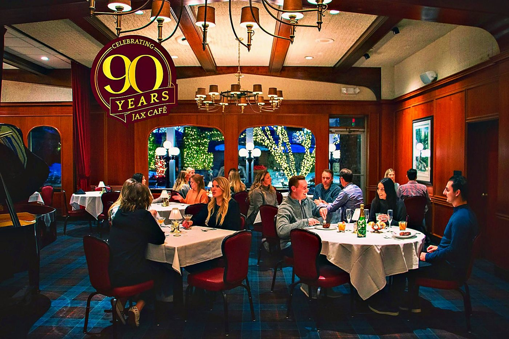
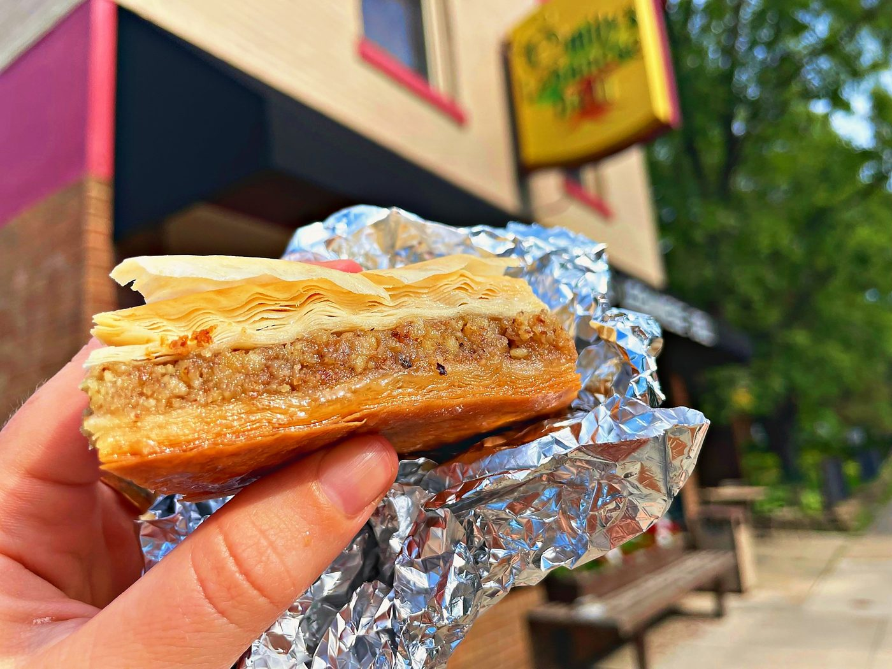
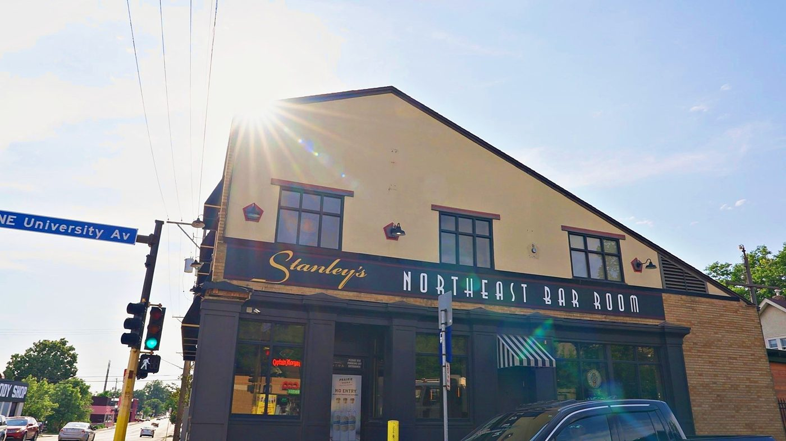
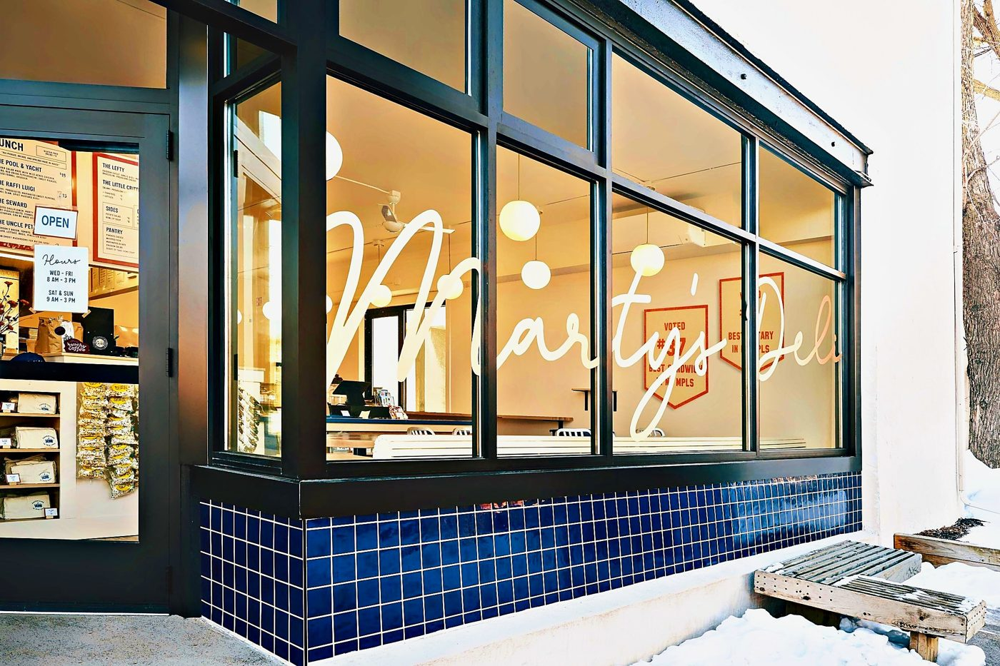
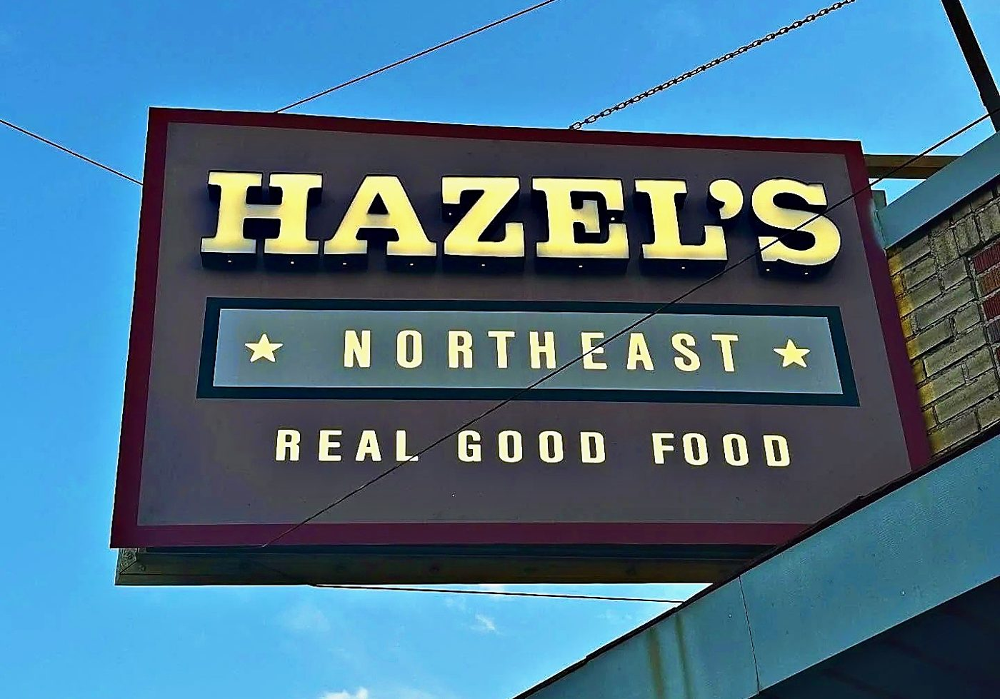
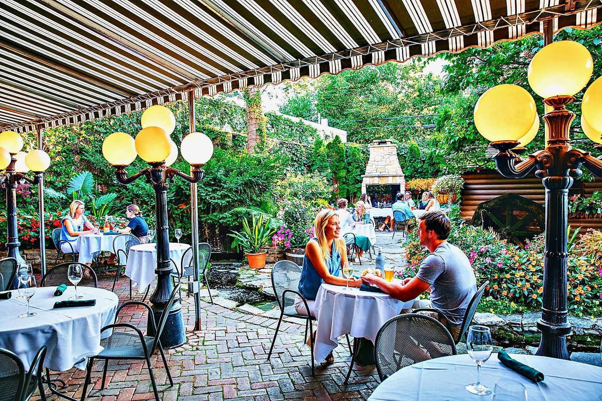
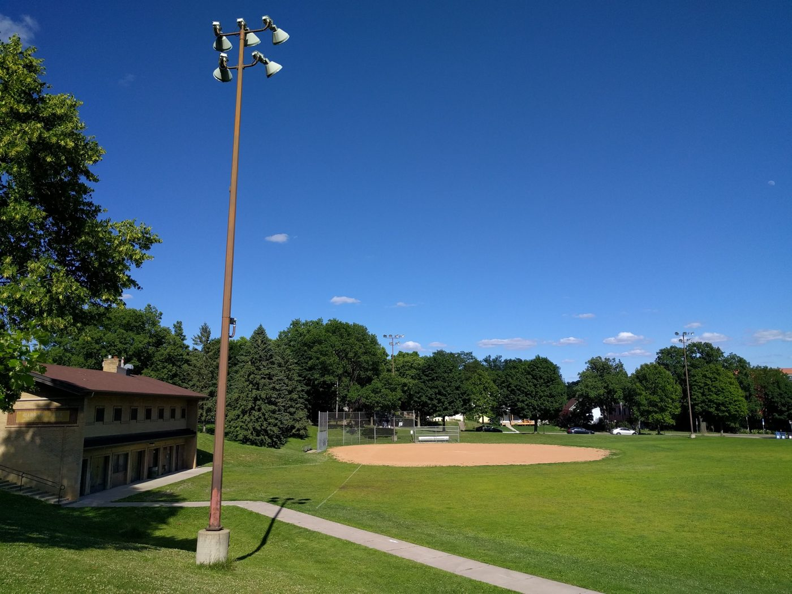
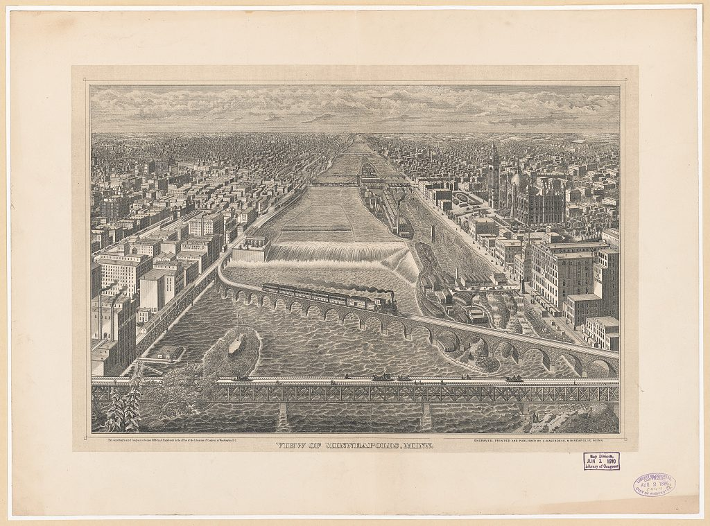
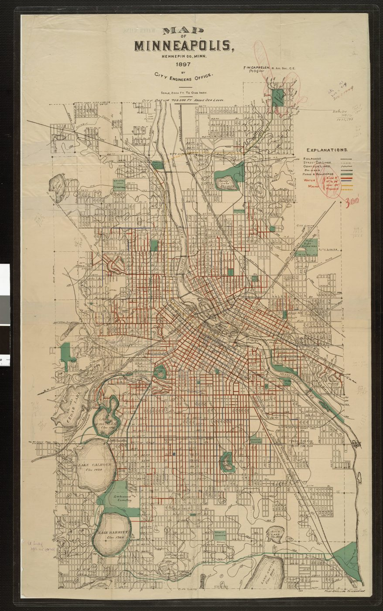

Holy Land
Middle Eastern deli, bakery and grocery
The hummus is the move. Shawarma when you're craving it, and a grocery aisle you'll lose an hour in. Open every day of the year.
17 min walk · 3 min drive
Windom Park · Northeast Minneapolis
I walked a 1908 home a block from Windom Park, then kept walking. This is the neighborhood: the park, the food, the history of the hill, and how close everything really is.
The tour, written down
Hi everybody, I'm Geoffrey Serdar. Today it's a little 1908 house in Windom Park, and I want you to feel what it's like to live here, not just what it looks like.
You come in through the porch, drop your keys at the front entry, and you're in the living room. It's stucco, it's a true two story, and the owners are joyful maximalists, so every corner has art and color. It's just fun.
The park is a block away, about a two minute walk. Big trees, kids laughing from the playground, skating in winter. Back in the day the park even had concerts. I'm a big believer in something real estate people call scarcity: you want a home with things nobody can build next to it later. A park and a school on the block is exactly that.
This sunroom feels so good. The light pierces right through, and it's a lovely place to work or create whatever it is you do. The dining room is a really nice size. It's everything you need.
Standing in the kitchen is where I start talking about the neighborhood, because that's what you'll do here. Holy Land is close, and if you're jonesing for shawarma or the hummus, it's the spot. The kitchen itself has been completely cared for. Immaculate, zero dust anywhere.
Wood floors, chunky old baseboards, a little peek through nook, an office or guest room, a primary room tucked under the roofline with a big closet, and a bathroom with an iron tub. The floors creak, the way good old floors do. I grew up in an old Minneapolis house in Kingfield, so that sound is home to me.
Side entry, partly finished, and a poured rock foundation. The mechanicals look clean, and there's a sump pump with drain tile, which honestly made me say out loud: what a bonus.
Out back there's a big autumn tree, a freshly painted deck, and a garden that's been thoughtfully planned and is resting for the season. Picture it in June. It's an easy home to live in.
Just north is Windom Park, and Pillsbury Elementary is right there. If you love the sound of kids playing, this might be a great place for you. Corner Coffee and Holy Land are close. We've got Gardens of Salonica, where our friend Anna cooks; she's a divine chef and a sweetheart. Target and Home Depot at the Quarry are a few minutes away for the everyday errands.
And yet the street isn't a straight through thoroughfare. It's not quite a cul de sac, but it adds just enough friction that you don't get crazy traffic.
Then you're in the park. That walk was like 200 seconds. If you have kids, how fun would it be for them to play soccer here? This park is your backyard. Downtown is about 10 minutes away, the buses are close, and whatever you're hungry for, you've got about 30 options. It's so diverse. I love that.
The garden
The owners walked me through the yard plant by plant, and it's too good to keep to myself. So here's the garden, the way they described it to me.
Four birch trees stand in the front yard, with that white bark that glows on a gray Minnesota afternoon. Under them is a wildflower and native plant garden. Native plants are the ones that belong here. They feed bees, butterflies and songbirds, they handle our winters, and once they settle in they ask for very little water or fuss. You get color all summer and you get to sit on the porch and watch the pollinators work.
The big tree behind the house is a maple, the one glowing orange in the tour. Around it is a more traditional garden: peonies, hollyhocks and a mix of other flowers. In Minneapolis the peonies usually open in late May into June, big and fragrant, right around the end of the school year. The hollyhocks take over in July, tall old fashioned spires along the fence, and they keep going into August. So the back garden hands off from one show to the next.
A garden like this takes years to grow in. You can buy a house any time, but you can't buy a mature maple or a birch grove next spring. Here it's already done, and it's been loved. Picture coffee on the deck in June with the peonies out.
Watch on YouTube
Fifteen minutes, the home and then the walk to the park. Watch it on YouTube or find more tours on Real Talk with Geo.
Tap the map
Tap a pin to see the spot and roughly how long it takes to get there from the home, on foot and by car.
Times are approximate, routed from the home on foot and by car with OSRM routing, off peak. The shaded circles show roughly a 5 and 10 minute walk. Map data © OpenStreetMap contributors.
Restaurants near Windom Park
Every place here is open and in Northeast. Times are from the park's corner of the neighborhood, walking at an easy pace or driving off peak.
Middle Eastern deli, bakery and grocery
The hummus is the move. Shawarma when you're craving it, and a grocery aisle you'll lose an hour in. Open every day of the year.
17 min walk · 3 min drive
Smash burgers on Central
A short, happy menu of burgers and fries a few blocks from the park.
15 min walk · 3 min drive

Tacos and Mexican plates
Bright, generous plates right on Central Avenue.
15 min walk · 3 min drive
Neighborhood diner and bar
Fish and chips, breakfast all day, and the kind of booth you keep coming back to.
15 min walk · 3 min drive

Counter breakfast since forever
A tiny counter, a griddle, and hash browns done right.
28 min walk · 5 min drive

Sandwiches and a corner deli feel
Big spreads, small room, real warmth.
31 min walk · 4 min drive

Burgers, patio and games
The easy yes for a group dinner.
33 min walk · 5 min drive
Southeast Asian street food
Colorful plates and a patio people plan their summer around.
34 min walk · 6 min drive

Old school supper club
White tablecloths, a garden patio, and a trout pond. The anniversary spot.
6 min drive

Family run Lebanese
Spinach pies and kibbeh from a family that's been at it for decades.
8 min drive
Hmong cooking, chef driven
One of the most talked about tables in the Twin Cities right now.
8 min drive
Hmong American comfort food
Brunch, noodles and a bakery case worth the trip.
8 min drive
Tortilleria and tasting counter
Fresh masa, fresh tortillas, and food that tastes like care.
8 min drive

Hot dogs and Chicago style
Snap, relish, done. The quick lunch.
35 min walk · 6 min drive

Greek, made by our friend Anna
Anna is a divine chef and a friend of ours for a long time. Go hungry.
7 min drive

Nepali, Indian and Tibetan
Momos and curries in a warm little room.
7 min drive

Eastern European deli and sausage maker
Cabbage rolls, pierogi and house sausage. A Northeast institution.
8 min drive

Neighborhood dinner spot
Small plates made for sharing on East Hennepin.
8 min drive
Out front





Coffee and everyday errands
| Place | Walk | Drive |
|---|---|---|
| Corner Coffee | 15 min | 3 min |
| Holy Land grocery | 17 min | 3 min |
| Target at the Quarry | 14 min | 4 min |
| Home Depot at the Quarry | 12 min | 4 min |
| Downtown, Nicollet Mall | bus | 10 min |
Errands in one trip: one stop at the Quarry covers the Target run and the Home Depot run, then you're home before the ice cream melts.
Parks

About 8 acres with ball fields, a soccer field, tennis and pickleball, a basketball court, a playground with a 50 foot zip line, a wading pool, and in winter a hockey rink, a skating rink and broomball. The recreation center is attached to Pillsbury Elementary, so programs run year round.
Want more green? Deming Heights Park, the high point of the city, is about a 5 minute drive, and Columbia Park and its golf course are about 7.
History


Schools
| School | Grades | From the park |
|---|---|---|
| Pillsbury Elementary | Pre K to 5 | Next door, with the rec center |
| Northeast Middle School | 6 to 8 | 4 min drive |
| Edison High School | 9 to 12 | 4 min drive |
Minneapolis Public Schools lists Northeast Middle and Edison as the community pathway for Pillsbury. Assignments can change, so confirm any specific home with the district's school finder.
Quick facts
But look at how quick that was. That was just a, you know, that was like a 200 second walk. Nothing. And you're in this super cool park.
Hey everybody, my name's Geoffrey Serdar, and welcome to another Northeast Minneapolis home tour. But before we get started, I'd like to ask for your permission. May we treat you like one of our clients? You're going to come with me, and we're going to walk through this like it's a real showing.
I'll show you the goods and I'll tell you what's great about this neighborhood, and you just might fall in love and text me, "Geoffrey, I'm ready to move." Today, it's a little 1908 house, on a block right by the park. There aren't many streets like that, and that's what makes this one special.
So come with me and let's get started. Coming through the porch, and immediately you get this super comfortable front entry where you can stash your keys right here, and coming in through this living room. It was built in 1908. Stucco exterior.
That's the good era of stucco. I mean early era stucco is the good stuff because it was really in the 90s when stucco started to have lots of problems. It's a true two story. Got a few beds.
Got a bathroom. We've got a bathroom in the basement too. How luxe is that? Anyways, I think it's just great fun to see it with all the belongings and art.
They're very much so maximalists.
That's so fun, so playful. You know, it's a block away from Windom Park, and you know, that's only a two minute walk. Big trees, tons of kids' voices from the park, you know you got skating in winter, you know back in the day they used to have lots of concerts. And you know I'm a huge believer in a concept in real estate called scarcity, right?
Having a park right essentially on the block means this home is more special. You know, I hate to say it, but you sort of like to purchase real estate with unique aspects that aren't easy to replicate. And being next to a school, next to a park, it's just one of those unique features
that this home comes with. Let's check out this sunroom. You know, this sunroom feels so good, and I just love this sun as it like pierces through, just feels, feels nice. Obviously the blinds are drawn.
If they weren't, you'd really feel it. What a nice working space to really go about creating whatever it is that you do. It's a nice, it's a really nice size. It's everything you need.
So we've seen the sunroom, we've seen the living room,
we're gonna go into the kitchen. I really love Holy Land. Now, back in the day, Holy Land used to use Amish chicken, which I thought were a little bit juicier than these days, but if you're just really jonesing for a shawarma, Holy Land is such the vibe. Now, there used to be really close, a little sushi place, Momo Sushi.
It actually had burned down. However, there's another one opening up soon. I really got to show you this back deck. It's freshly painted, and the garden back there has been thoughtfully planned.
But now, this kitchen's a really nice size. You know, the owners have completely taken care of this space. It's absolutely immaculate. There's zero dust anywhere.
I'm gonna go through the kitchen and through the dining area,
And then we're gonna go upstairs. Lots of cute little spaces upstairs. One of the touches that they've added is these little, you know, fabric grips. But look at these little touches, right?
Like, you've got these really beautiful wood floors, these beautiful chunky baseboards. It's just, it's light and airy. It feels good, and you know, of course this little like peek through. Let's just look at it again, right?
Isn't that kind of a sweet little spot? Right there. Yeah. You can't quite see it, but there's sunlight peering through right there.
I think this is really fun. Here's the office, quickly. Now, we're gonna actually clear this entire space out before it hits the market. Of course, if you're thinking about wanting to live here before we do all that, give me a shout.
Okay, so here's
the primary. Nice. It's got an interesting roofline, big closet, super clean, another extra closet back there. Go into the bathroom.
Really nice sized tub. Now, these older homes often don't actually have the bigger size tubs. Now, I think, oh yeah, that's iron, and that thing's been there for a long time and it's never leaving, but a really comfortable sized bathroom.
There's an elegance to it. Let's go downstairs. Let's check out the basement. You know, I love these sounds, that everywhere I step there's a little bit of a creak.
I grew up in a house like that. I grew up in Kingfield, Minneapolis. There used to be two SuperAmericas. I would write down the price of Snapple on one in my little notebook and then I'd go to the other and compare.
That's just a little tidbit. Little Real Talk Geo tidbit fact. Okay so we have a side entry. It's always nice.
All right, so the basement's been partially finished. Now, it's got a nice smell. A lot of homes, You know, at this era, most of the time, the foundation is what we call poured rock. Little moisture creeps through.
That's normal. Down here, this is being used as an art studio. It's a really good size. It's got good height.
There's that little hidden bathroom. Nice to have this. You know, a lot of the times in Minneapolis, the bathroom is kind of like in the... Of course.
The bathroom's merely a little toilet all by itself. Here's your laundry. And we'll peek out through the other side here. Let's look at the HVAC system.
I do have a light so I'm gonna turn it on. When was this built? Doesn't say, but it's in great shape. It's clean.
I'm noticing no rust. Rust typically is how you'd know that it's been pretty old. Oh look at this! What a bonus!
We've got a sump pump drain tile system. It means that, and here you can see, poured rock. So if there's ever moisture coming in, it's getting pumped out through these pipes.
All right, now let's look at this back deck, freshly painted, the leaves are here. Now remember, you're really seeing this before everybody else. Okay, when this is finally on the market, on the public market, this home will be completely cleared out. So you can imagine your own life here.
Minnesota is so pretty this time of the year. I mean, look at this beautiful tree, and it's so healthy. I don't know for sure. Maybe it's a maple tree.
I should know tree leaves, but I just don't. I'll have to research that and correct myself later. But that is just a really, really pretty tree. Okay, so I have been told by the owner that she's really set up a beautiful garden back here.
Obviously it's fall, so the flowers are all resting, but there's a lot of different species out here, and look at the cuteness of this home. That's a really comfortable deck. You know, you could have three, four of your friends really hanging out. You, your kids, your lover, your crush, whoever, you know, your neighbor, maybe that's everybody you hold together.
Together.
I don't know, but a lot of really good times. And look at this, look at the garage. You got a nice two stall. How nice to have a two stall garage in this neighborhood.
Not everybody has one, right? So it's important to consider: is this an easy home to live in? The answer is yes. It'd be a great lifestyle.
I really appreciate you coming with me on these tours. I'm gonna take a walk down the sidewalk, we're gonna talk about the neighborhood. You know, once again, you know, if you are inclined, you want to give me a call or shoot me a text. My iPhone's 952.258.3100.
And I get it, you may think it's a little strange to text someone while you're watching a YouTube video, it happens all the time. So it's just, you know, it's not a bother. You know, I'm hopeful that you don't text me at two in the morning, because I probably won't answer, but you could get me pretty late at night, I'm a night owl,
Gosh, I just wanna look at this tree one more time before we walk down the street. Isn't that pretty? And the neighbors. I've been told the neighbors are lovely.
There's one now. All right, let's walk down the street. You can see how cute this really is.
Just north is Windom Park. Pillsbury right there. So, if you love the sound of laughing and probably some yelling, this might be a great place for you.
Corner Coffee is close. I already told you about Holy Land. You gotta try the hummus. It's bomb as heck and you know, I wanna talk about that sushi place again.
Momo, I guess it had a small fire, but they're changing locations, in downtown Northeast, which this is super close to. We've got Gardens of Salonica. Those are my friends, so I'm going to plug them a little bit. I love Anna.
She's such a sweetheart, she's a divine chef, and she's been a friend of ours for a long, long time.
Okay, so aside from that, we're obviously really close to the Quarry. So if you're thinking about a place that has a convenient life, you know you've got your Target, you've got your Home Depot, nice to have that, you know, extremely convenient lifestyle, where that's just a couple blocks away.
Right? But we're still kind of on this not straight through thoroughfare, which makes this... it's not quite a cul de sac, but it adds just a little extra friction so that you're not gonna have crazy traffic coming in.
Now, look at this park. Isn't this...? We're gonna end the video up here on maybe a little bit of history. I think the park was bought, or the area was bought, in 1887.
And I think it was a former nursery, and the caretaker, J. McCarty, I think he was paid like in bales of hay. Not quite sure, so you'll have to look that up and tell me. And then William Windom picked it up.
He was twice a US Secretary. Supposedly there was going to be a little lookout out here, which is just so fun. And it was built on a steep hill, and that is a bit of a hill.
I'm sure a lot of it's changed over time, but look how quick that was. That was just a, that was like a 200 second walk, nothing. And you're in this super cool park. If you're going to live here and if you've got kids, how fun would it be for them to play soccer here?
This park, this park is your backyard, right?
And you know, we're nine minutes from downtown, plenty of bus travel, should you need it. And you know, Central is just kind of a fun area. Lots of great places to eat. So diverse.
You know, you just have a little bit of everything, and I love that. You know, there's just so much to do. You know, whatever your emotion feels, you know, whatever you're hungry for, You got like 30 options.
So I'm gonna say it one more time. Thanks for joining. I really appreciate it. You know this has obviously been another walking tour.
You know, another Real Talk Geo. We'll catch you on the next one. And once again, if you need me, just shoot me a text: 952.258.3100. Thanks everybody.
Goodbye.
Questions people ask
Most people who move here say it's the mix that wins them over: real neighborhood blocks, big trees, parks every few streets, and an honest food scene within a few minutes. Downtown is about 10 minutes by car.
Holy Land, Corner Coffee, Francis Burger Joint and El Taco Riendo are each about a 15 minute walk or a 3 minute drive. Hazel's is about the same. Stanley's, Hai Hai, Jax Cafe and Marty's Deli are 4 to 6 minutes by car.
Pillsbury Elementary and the Windom Northeast Recreation Center sit right with the park. Target and Home Depot at the Quarry are about a 4 minute drive.
Pillsbury Elementary (Pre K to 5) is in Windom Park. Minneapolis Public Schools lists Northeast Middle School and Edison High School as the community pathway. Always confirm a specific home's assignment with the district school finder.
About 10 minutes by car to Nicollet Mall off peak, and there's bus service close by.
It's named for William Windom, a Minnesota senator who served twice as US Secretary of the Treasury. The park board bought the land in 1887, when it was an old nursery on a steep hill already full of trees, and gave it the Windom name in 1893.
About 8 acres with ball fields, a soccer field, tennis and pickleball, a basketball court, a playground with a 50 foot zip line and a wading pool. In winter there's a hockey rink, a skating rink and broomball. The rec center is attached to Pillsbury Elementary, so programs run year round.
The Quarry. Target and Home Depot are both about a 4 minute drive, so one stop covers the whole list. Holy Land's grocery and Corner Coffee are about a 3 minute drive.
Yes. Deming Heights Park, the high point of the city, is about a 5 minute drive, and Columbia Park and its golf course are about 7 minutes away.
Many date to the early 1900s. The 1908 home in the tour has wood floors, original baseboards, a sunroom, a poured rock foundation, and a sump pump with drain tile in the basement. Every house is different, so ask about the one you're looking at.
Text me at 952.258.3100. I'll send you the details and set up a time to walk it with you.
Yes. I'm about to bring a 1908 home a block from the park to market. Text me at 952.258.3100 and I'll send you the details.
More neighborhoods: MinneapolisA Northeast duplex tourWhittierSaint PaulBuying with GeoLocal Log
It's a 1908 home a block from Windom Park, and it hasn't hit the market yet. Text me and I'll send you the details, answer anything, and set up a time to walk it with you. I answer myself, night owls included. Just text Geo.
Text GeoPick what fits. Geoffrey answers himself.
Your information stays with Geoffrey. No spam, ever.
Geoffrey will reach out to you directly.
In the meantime: 952-258-3100.